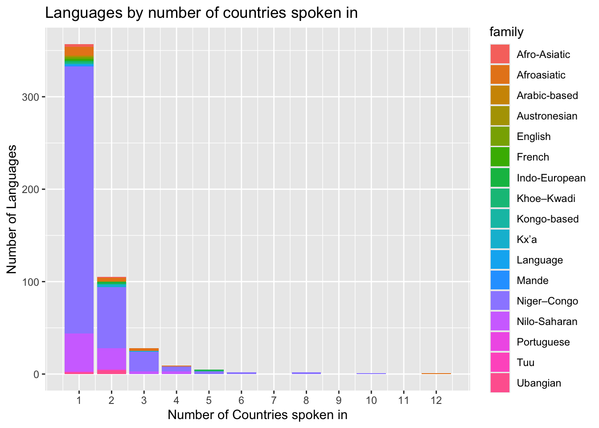
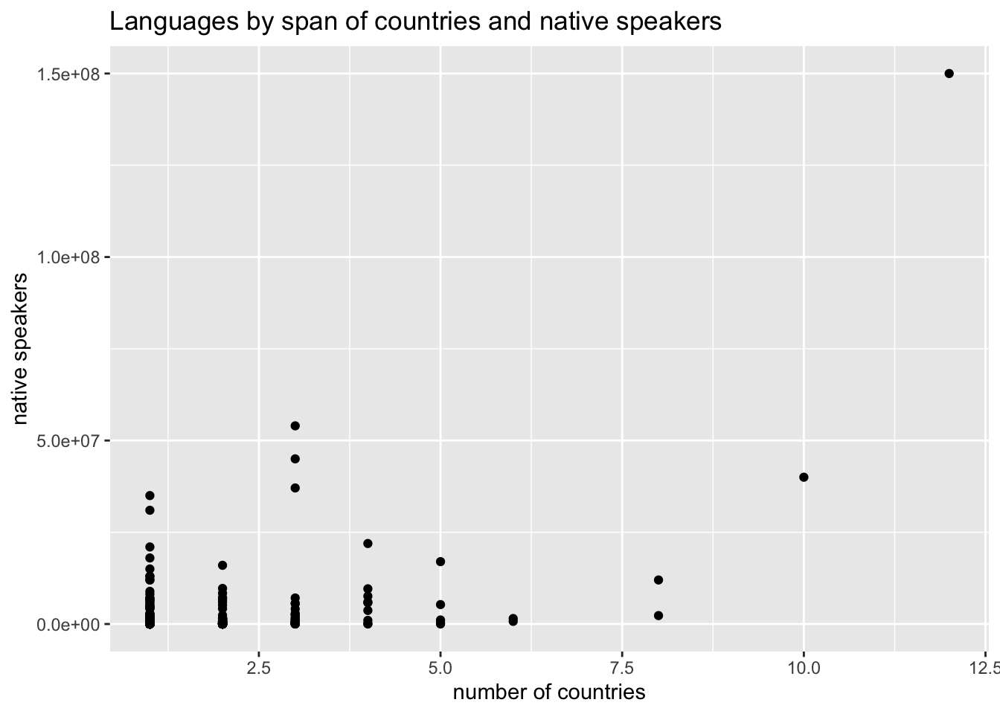

tuesdata <- tidytuesdayR::tt_load('2026-01-13')## ---- Compiling #TidyTuesday Information for 2026-01-13 ----
## --- There is 1 file available ---
##
##
## ── Downloading files ───────────────────────────────────────────────────────────
##
## 1 of 1: "africa.csv"library(dplyr)##
## Attaching package: 'dplyr'
##
## The following objects are masked from 'package:stats':
##
## filter, lag
##
## The following objects are masked from 'package:base':
##
## intersect, setdiff, setequal, unionlibrary(tidyverse) ## ── Attaching core tidyverse packages ──────────────────────── tidyverse 2.0.0 ──
## ✔ forcats 1.0.1 ✔ readr 2.1.6
## ✔ ggplot2 4.0.1 ✔ stringr 1.6.0
## ✔ lubridate 1.9.4 ✔ tibble 3.3.1
## ✔ purrr 1.2.1 ✔ tidyr 1.3.2
## ── Conflicts ────────────────────────────────────────── tidyverse_conflicts() ──
## ✖ dplyr::filter() masks stats::filter()
## ✖ dplyr::lag() masks stats::lag()
## ℹ Use the conflicted package (<http://conflicted.r-lib.org/>) to force all conflicts to become errorslibrary(dsbox)
library(mosaicData)
africa <- tuesdata$africaglimpse(africa)## Rows: 796
## Columns: 4
## $ language <chr> "ǂKxʼaoǁʼae", "ǂKxʼaoǁʼae", "Abon", "Abron", "Abron", …
## $ family <chr> "Kxʼa", "Kxʼa", "Niger–Congo", "Niger–Congo", "Niger–C…
## $ native_speakers <dbl> 5000, 5000, 800, 1393000, 1393000, 20000, 300000, 2500…
## $ country <chr> "Namibia", "Botswana", "Cameroon", "Ghana", "Ivory Coa…This data set contains a large list of of all of the languages spoken in each country in Africa. I am going to organize this data and then answer a few questions including which country in Africa has the largest number of languages and which languages cut across multiple countries and
africa2 <- africa %>%
group_by(language, family, native_speakers) %>% summarise(num_countries = n_distinct(country))## `summarise()` has grouped output by 'language', 'family'. You can override
## using the `.groups` argument.glimpse(africa2)## Rows: 510
## Columns: 4
## Groups: language, family [504]
## $ language <chr> "Abon", "Abron", "Acheron", "Adara", "Afar", "Afrikaan…
## $ family <chr> "Niger–Congo", "Niger–Congo", "Niger–Congo", "Niger–Co…
## $ native_speakers <dbl> 800, 1393000, 20000, 300000, 2500000, 7200000, 27000, …
## $ num_countries <int> 1, 2, 1, 1, 3, 2, 1, 2, 2, 2, 1, 1, 1, 2, 1, 1, 1, 12,…now that i have filtered all the duplicates that exist in different countries out of the dataset, there are still 510 different unique languages that exist in africa. That is too many to put along the x axis in a graph, however I can use num_countries variable as the x and the count of countries that apply in the y as shown below
africa2 %>%
ggplot(aes(x=num_countries, fill=family)) +
geom_bar() +
labs(
title = "Languages by number of countries spoken in",
x= "Number of Countries spoken in",
y= "Number of Languages"
) + scale_x_continuous(breaks=1:max(africa2$num_countries))
it appears in this graph that most languages only exist in one country, however there is one language spoken in 10 and one in 12. Let’s figure out what those two languages are.africa2 %>% filter(num_countries ==12)## # A tibble: 1 × 4
## # Groups: language, family [1]
## language family native_speakers num_countries
## <chr> <chr> <dbl> <int>
## 1 Arabic Afroasiatic 150000000 12africa2 %>% filter(num_countries ==10)## # A tibble: 1 × 4
## # Groups: language, family [1]
## language family native_speakers num_countries
## <chr> <chr> <dbl> <int>
## 1 Fulani Niger–Congo 40000000 10Arabic is spoken in 12 countries and Falani is spoken in 10 countries. Below are all the languages that are spoken in one or less countries.
africa2 %>% filter(num_countries >=2)## # A tibble: 153 × 4
## # Groups: language, family [153]
## language family native_speakers num_countries
## <chr> <chr> <dbl> <int>
## 1 Abron Niger–Congo 1393000 2
## 2 Afar Afroasiatic 2500000 3
## 3 Afrikaans Indo-European 7200000 2
## 4 Aiki Nilo-Saharan 19000 2
## 5 Aja Nilo-Saharan 200 2
## 6 Aka Niger–Congo 30000 2
## 7 Amdang Nilo-Saharan 170000 2
## 8 Arabic Afroasiatic 150000000 12
## 9 Avokaya Nilo-Saharan 100000 2
## 10 Baka Nilo-Saharan 60000 2
## # ℹ 143 more rowsHere I am going to attempt to visualize the relationship between active speakers and number of languages to see if there is a positive relationship there.
africa2%>%
ggplot(aes(x=num_countries, y=native_speakers)) +
geom_point() +
labs(
title = "Languages by span of countries and native speakers",
x= "number of countries",
y= "native speakers"
)